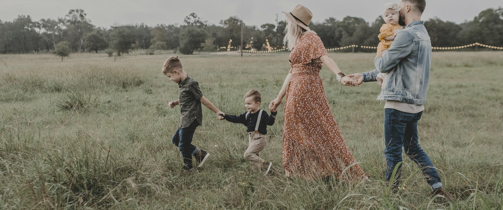
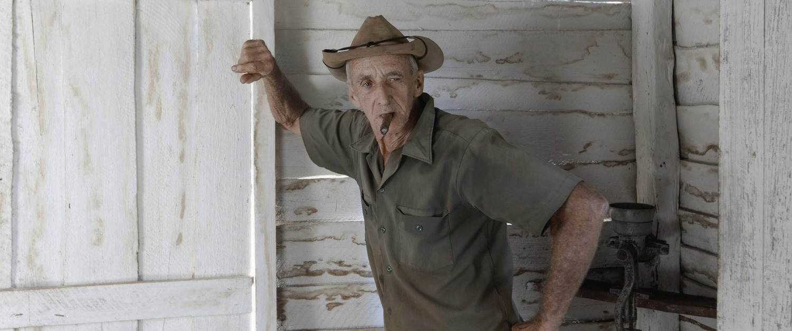
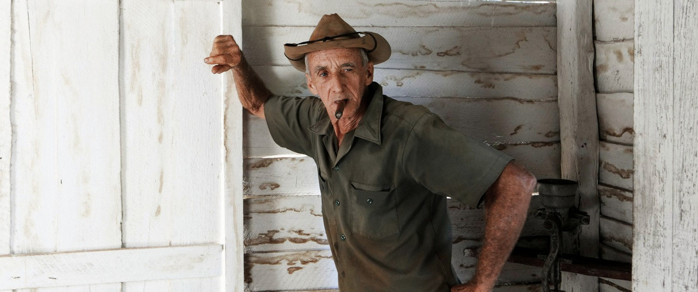
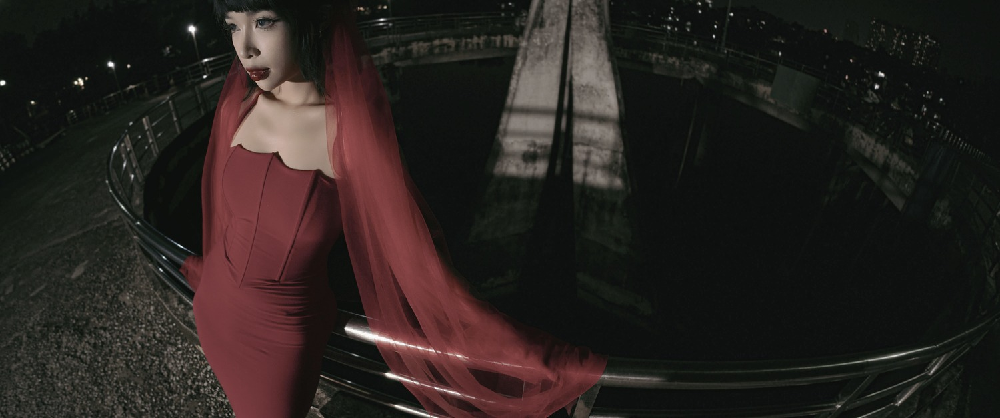
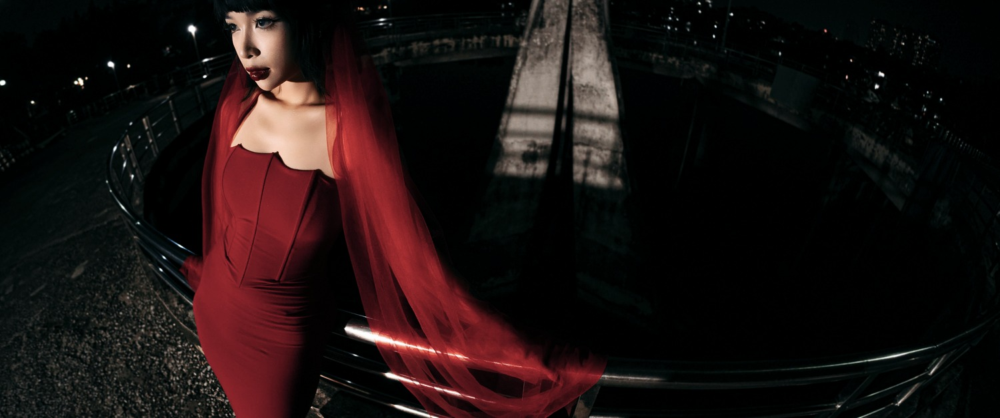
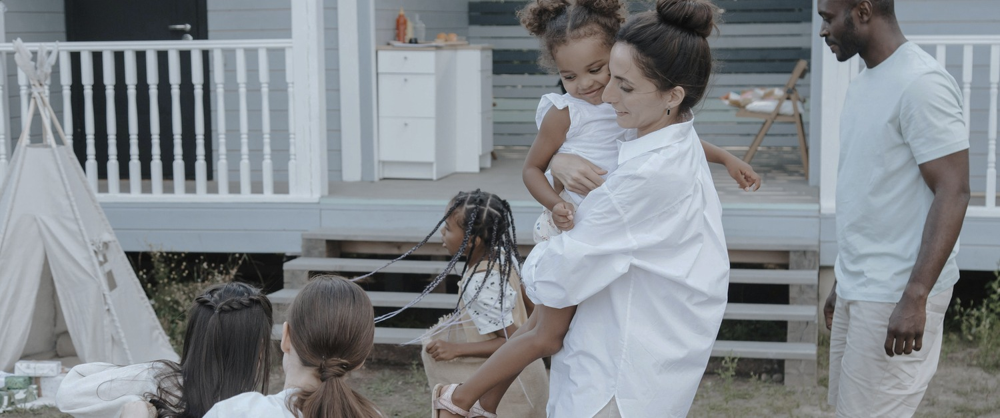

Eu criei a CINÉRA para quem filma e edita e quer chegar num visual de cinema sem virar colorista.
São cinco looks que eu uso no meu próprio trabalho. Cada um cria um clima diferente, mas todos cuidam das mesmas coisas: pele com cara de pele, céu e luzes fortes que não estouram de um jeito feio e pretos com profundidade.
Você aplica, ajusta a intensidade se quiser, e segue editando.
erick borborema · direção audiovisualLUT é um arquivo de cor (termina em .cube) que o seu programa de edição lê e aplica no vídeo. Pense num filtro profissional: ele transforma as cores de um jeito preciso e sempre igual.
Quando você grava em Log, a imagem sai lavada e cinza de propósito, porque a câmera guarda mais informação nas luzes e nas sombras. O LUT da CINÉRA faz as duas coisas de uma vez: converte o Log para uma imagem normal e aplica o look.
Mesma cena, cinco looks. Exemplos feitos com os próprios arquivos da coleção.
a minha assinatura. contraste de cinema na medida, pele natural, pretos profundos sem perder detalhe e cores elegantes, sem exagero.
ideal parauso geral, institucional, eventos, documentário. o look "da casa".
quente, nostálgico e romântico. altas luzes douradas, sombras quentes e transições suaves.
ideal paragolden hour, casamento, pré-wedding, lifestyle.

orgânico e documental. verdes oliva, cores terrosas, amarelos controlados e contraste natural.
ideal paradocumentário, natureza, viagem, marcas com estética orgânica.


frio, dramático e elegante. sombras azuladas e azuis profundos, sem deixar a pele azul.
ideal parafim de tarde, noite, urbano, moda, narrativas dramáticas.


suave e delicado. contraste leve, altas macias, pele bonita e um toque de matte nos pretos.
ideal paracasamento, retrato, beleza, conteúdos delicados.

depende só de como você gravou.
pasta Sony S-Log3. Confira na câmera se o gamut é S-Gamut3.Cine ou S-Gamut3 e use o arquivo com o mesmo nome.
pasta Apple Log (iPhone 15 Pro em diante, com Apple Log ligado).
pasta Canon Log 3.
pasta Rec709. Serve para vídeo comum de câmera, celular ou drone, e para vídeo que já foi convertido.
pasta Creative Only (ACEScct). Se você não sabe o que é ACES, não é para você e está tudo bem.
01 signature, 02 golden, 03 olive, 04 blue hour, 05 romance
soft, standard ou rich
de que câmera vem e para onde vai. Aqui: S-Log3 da Sony para vídeo normal (Rec.709).
65 é o mais preciso e o que eu recomendo. 33 existe para programas ou aparelhos que não aceitam o 65.
dica: para deixar o look mais leve, abaixe o Key Output Gain do nó do LUT (na aba Key).
Qualquer programa que aceite arquivos .cube funciona do mesmo jeito.
O LUT parte do princípio de que a imagem está bem exposta e com o branco certo. Acerte isso antes, no nó ou no ajuste anterior ao LUT.
O LUT de câmera já transforma o Log em imagem normal. Não use junto outra conversão (outro LUT de câmera ou a conversão automática do programa).
Sony com Sony, iPhone com Apple Log, Canon com Canon. Vídeo normal sempre na pasta Rec709.
| o que aconteceu | por quê | como resolver |
|---|---|---|
| ficou contrastado e saturado demais | a conversão do Log foi feita duas vezes | desligue a conversão automática do programa, ou use a pasta Rec709 |
| ficou lavado, com o preto acinzentado | Data Levels do clip em Full | Clip Attributes → Data Levels: Auto |
| a cor ficou bem estranha | pasta ou gamut errado | confira como a câmera gravou (ex.: S-Gamut3.Cine × S-Gamut3) |
| o look está forte demais | é só intensidade | use a versão SOFT ou abaixe a força do nó do LUT |
| o LUT não aparece na lista | o programa ainda não leu a pasta | Update Lists, ou feche e abra o programa |
O texto completo está no documento "Licença de Uso", que vem junto com a coleção.

Fotos de exemplo: Unsplash e Pexels (Prime Cinematics, Jessica Rockowitz, tkirkgoz, dauphotographer, Ron Lach, cottonbro studio), com o sinal de câmera simulado e os LUTs da coleção aplicados, sem retoque depois do LUT. O resultado no seu material depende de exposição, balanço de branco e câmera.